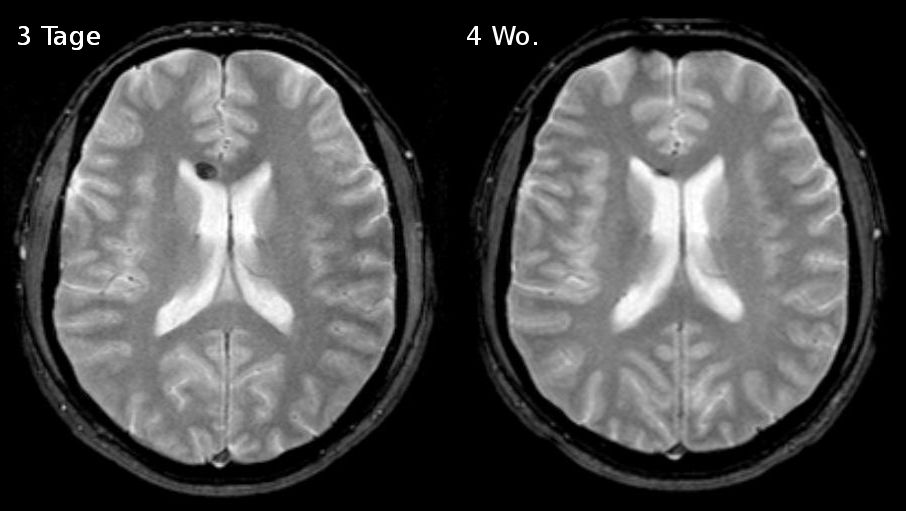

Ficha del catálogo
Lesión axonal difusa
- Sistema
- Nervioso
- Modalidad
- RM
- Región
- Unión corticosubcortical, cuerpo calloso y tronco del encéfalo
- Dificultad
- Avanzado
La lesión axonal difusa es el daño de los axones producido por fuerzas de aceleración y desaceleración con componente rotacional, típicas de los accidentes de tránsito. Explica el coma inmediato y prolongado de muchos traumatismos graves con tomografía inicial poco expresiva, lo que genera una disociación llamativa entre la clínica y la imagen.
Técnica
Resonancia magnética con secuencia sensible a susceptibilidad magnética, difusión, FLAIR y T2, realizada cuando el paciente está estabilizado. La secuencia de susceptibilidad es la más rentable porque detecta focos hemorrágicos milimétricos.
Qué observar
- Focos puntiformes de pérdida de señal en la unión entre sustancia gris y blanca
- Lesiones en el cuerpo calloso, sobre todo en el rodete y en el borde inferior
- Focos en la porción dorsolateral del tronco, junto a los pedúnculos cerebelosos
- Restricción a la difusión en lesiones no hemorrágicas de fase aguda
- Hiperintensidades ovaladas en FLAIR alineadas con los haces de sustancia blanca
- Desproporción entre la escasez de hallazgos y la gravedad del estado neurológico
Hallazgos
Se observan múltiples focos pequeños, ovalados o puntiformes, distribuidos de forma característica en tres niveles de gravedad creciente que van de la unión corticosubcortical al cuerpo calloso y al tronco del encéfalo. En la secuencia de susceptibilidad aparecen como puntos de intensa pérdida de señal cuando existe componente hemorrágico, y en difusión como focos brillantes con descenso del coeficiente aparente. La tomografía puede ser normal o mostrar solo algún punto hiperdenso o hemorragia intraventricular escasa.
Perlas
El compromiso del tronco del encéfalo es el que más pesa en el pronóstico, por lo que conviene revisar de forma dirigida la porción dorsolateral del mesencéfalo y de la protuberancia aunque el resto del estudio parezca poco alterado. Una tomografía normal en un paciente en coma tras un traumatismo de alta energía obliga a plantear esta entidad y a programar resonancia.
Diagnóstico diferencial
- Contusión cortical
- Focos superficiales de mayor tamaño en polos temporales y frontales basales, con edema circundante evidente.
- Embolia grasa cerebral
- Innumerables focos puntiformes en difusión de distribución difusa en ambos hemisferios, tras fractura de huesos largos y con clínica respiratoria.
- Microsangrados por hipertensión o angiopatía amiloide
- Distribución profunda o lobar en pacientes de edad avanzada, sin antecedente traumático ni afectación del cuerpo calloso.
- Lesiones desmielinizantes
- Periventriculares perpendiculares a los ventrículos, sin componente hemorrágico y con evolución en el tiempo.
Simuladores
- Vasos vistos de perfil en secuencias de susceptibilidad
- Calcificaciones puntiformes de los ganglios basales
- Artefacto de susceptibilidad en la interfase con senos paranasales y peñascos
Por modalidad
- TC
- Suele ser normal o mostrar hallazgos mínimos, por lo que un estudio negativo no descarta la lesión.
- RM
- Es la técnica de elección y define la extensión y el nivel de profundidad de las lesiones, datos con valor pronóstico.
Protocolo
Resonancia diferida cuando el paciente lo tolera, con susceptibilidad de alta resolución, difusión, FLAIR y T2 en al menos dos planos, incluyendo cortes finos del tronco del encéfalo y del cuerpo calloso en plano sagital.
Clasificación
Se estratifica en tres grados según la profundidad de las lesiones. El primero afecta solo la unión corticosubcortical, el segundo añade el cuerpo calloso y el tercero incluye el tronco del encéfalo, con empeoramiento progresivo del pronóstico funcional.
Errores frecuentes
- Descartar la entidad porque la tomografía es normal
- Realizar la resonancia sin secuencia de susceptibilidad
- No revisar de forma dirigida el cuerpo calloso en el plano sagital

lesión axonal difusa traumatismo craneoencefálico cuerpo calloso susceptibilidad magnética coma postraumático tronco del encéfalo